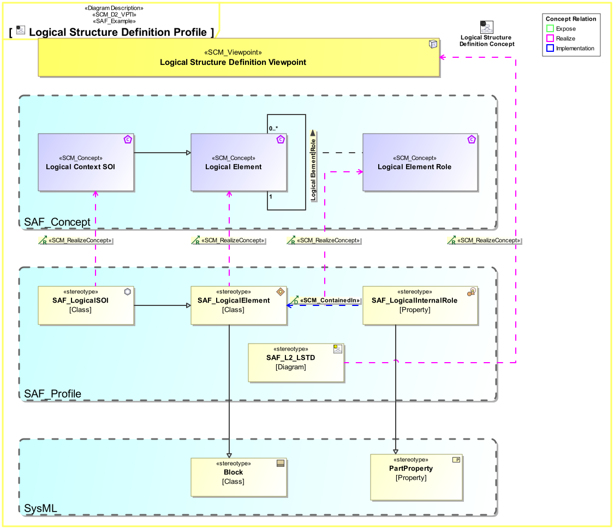

L2_LSTD Logical Structure Definition Viewpoint
| Domain | Aspect | Maturity |
|---|---|---|
| Logical | Taxonomy & Structure |

The Logical Structure Definition Viewpoint describes how the system is decomposed into a hierarchical structure of logical elements responsible for different system functions (divide & conquer principle). It covers related logical concepts and principles that support the logical operation of the system and is widely reusable among similar systems like product families, or product generations.
The Logical Structure Viewpoint supports the “System Architecture Definition Process” activities of the INCOSE SYSTEMS ENGINEERING HANDBOOK 2023 [§2.3.5.4] and contributes to the artifact “System Architecture Description”.
Furthermore, the Logical Structure Viewpoint supports the “Allocation and Partitioning of System Functions to Logical Entities” activities.
A block definition diagram (BDD) featuring the logical system block and logical blocks for any kind of logical element the system is composed of. These elements are connected to the system block by means of aggregation relationships. Note: Multiple relationships to a kind of element are allowed meaning, that this kind of element is used in several roles.
The following Stereotypes / Model Elements are used in the Viewpoint:
The Diagram shows the concepts exposed by the viewpoint, and related concepts if necessary.

| Concept | Documentation |
|---|---|
| Logical Context SOI | Represents the Logical SOI in the System Context on Logical Level. |
| Logical Element Role | Specifies the fact that a logical element comprises logical elements. |
| Logical Element | Describes a conceptual Logical Element as specification for an implementation of a system, or system element. |
The Diagram shows the implementation of exposed concepts.

| Concept | Realization |
|---|---|
| Logical Context SOI | SAF_LogicalSOI |
| Logical Element Role | |
| Logical Element | SAF_LogicalElement |